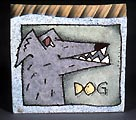

|
Dogs
Ceramic
artist Rimas VisGirda's Dog Life
Lithuanian born American ceramic artist Rimas VisGirda has always had dogs
in his life and his ceramics have been influenced by them. For those
of you not familiar with his work, please see also An
Introduction to Rimas VisGirda.
Please
click any image for an enlargement!
 isGirda,
who now lives in Champaign, Illinois, was born in Lithuania. His
family arrived in the United States when he was seven, first going
to Boston, then to LA, then Sacramento. To him, looking back, it
seems like his family always had dogs - they were generally small
ones, including a varied assortment of cocker spaniels as well as
mixed breeds. isGirda,
who now lives in Champaign, Illinois, was born in Lithuania. His
family arrived in the United States when he was seven, first going
to Boston, then to LA, then Sacramento. To him, looking back, it
seems like his family always had dogs - they were generally small
ones, including a varied assortment of cocker spaniels as well as
mixed breeds.
Ceramics wasn't VisGirda's first choice of profession, initially
choosing to do study Physics at Cal State Uni, Sacramento. During
this period he took an elective in ceramics there. However, it wasn't
until VisGirda had spent some years working as an Associate Physicist
in the aerospace industry developing rocket propellants, that he
realized that his true passion lay with ceramics. He decided to
move to the Sierra foothills to set up a studio pottery with his
friend Richard Hotchkiss..
VisGirda's
first own dog wasn't really his, but rather his girlfriend's at
college. She wanted them to have a dog and when she saw an ad in
the paper for cute puppies they bought a black one with white toes
and a white stripe on his chest. The mother was a German Shepherd.
The father wasn't known. They paid $7.50 and took him away. He was
about the size of a football. They named him Boston Blackie, (but
most people knew him as Boston) - after a 1950's TV series about
a detective that drove a hot sports car and had a beautiful girlfriend.
Boston wound up being more VisGirda's dog than the girlfriends -
he went with VisGirda everywhere, but he always preferred the girls
and if given a choice would hang out with them until it was time
to go, then he went with his master. He was a handsome dog that
grew tall and lean and had the head of a Shepherd with the body
of a chunky greyhound. He stayed all black with white toes and a
white slash on his chest.
Boston
accompanied VisGirda to graduate school and got to know all the
other students and professors. One day after a Christmas vacation,
VisGirda came back to campus to find signs posted on the doors of
the art building that read "Boston is a dog not a city"
- VisGirda thinks that's when he started using dogs in his work
- but it was difficult because Boston was black, so VisGirda used
his "artistic license" and changed Boston's color to be
appropriate to the situation. Artist and dog lived and worked together
for 16 years.
Many of VisGirda's pieces carry titles inspired by blues and country
& western music that he listens to in the studio. For him both
types of lyrics tend to expound on the simple, basic things in life
and coincide well with the common experiences in his own life, so
he often uses song lyrics as titles as they fit in to the visual
situation he's depicting.
Some years passed and in the meantime VisGirda broadened
his ceramic knowledge base by doing a Masters program back at his
old university of California State. One of his main influences at
the time was Robert Arneson, who was teaching just across the river
at the University of California. Arneson taught VisGirda the importance
to the artist of ideas and concepts, and how artistic expression
needs to surface from deep within. Soon after that, VisGirda went
on to do an MFA at Washington State University. It was here that
VisGirda realized the possibility of expressing narrative on ceramics,
in contrast to uniform glazing, e.g. as it was done in Renaissance
maiolica. It was also here that VisGirda started teaching a drawing
class, that -- of necessity -- honed his own drawing skills. It
was from these and other influences
of the time that VisGirda developed his current narrative, caricature
style decoration.
In
1997 VisGirda and his wife Billie Theide participated in an international
porcelain symposium at the Leander 1946 porcelain factory in Loucky
in the Czech Republic. They lived in the village, which has a population
of about 200, and would walk from their hostel to the factory. It
seemed like every house in the village had at least one dog. The
dogs that weren't inside would gather early every morning on the
dead-end street in front of their hostel where they would meet for
about 30 minutes, then go their separate ways for the rest of the
day. This experience led to a number of porcelain pieces produced
during the symposium, as well as pieces VisGirda made when he got
back to his own studio. The porcelain factory owner was also a dog
lover and really enjoyed the pieces...

Next
page > Benny and Dorothy > Page
2
More Articles
|